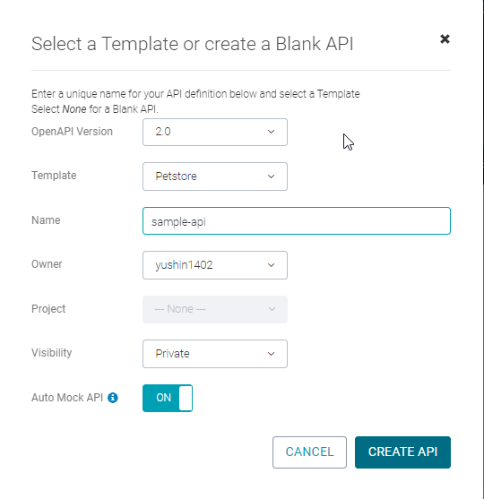
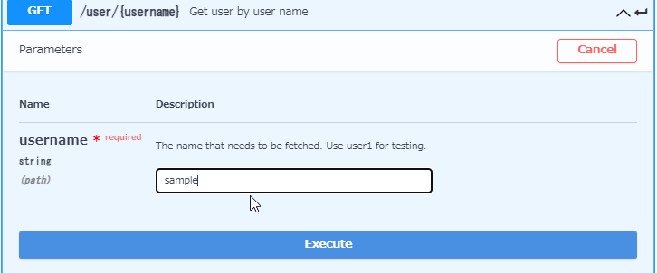

SwaggerHubはSwagger Editoer/UI/Codegenを具備した統合開発環境。クラウドサービスなので、課金することで環境構築なしで利用出来る。
価格表は以下サイトを参照。API仕様公開だけに利用するのであれば、Freeプランで十分と思われる。
(全APIの仕様を1つのドキュメントにまとめる前提)
[価格表]
https://swagger.io/tools/swaggerhub/pricing/
アカウント作成は、以下のサイトの「SIGN UP」から行う。
https://app.swaggerhub.com/home
アカウントを作成すると、以下のようなホーム画面が表示される。
「Create New」>「Create New API」から新規にAPI仕様ページを作成出来る。
作成するAPI仕様ページの設定を行う。「Auto Mock API」をONにすることで、スタブを自動生成するようにした。

作成が完了すると、API仕様の編集画面が表示される。
PetstoreテンプレートAPI定義が記載されている。
「Auto Mocl API」をONにしたため、/user/{username}の「Try it out」を押下後、パラメータを入力して
「Excute」を押下すると、モックAPIの呼び出しが出来る。
[実行画面]

[レスポンス]
画面左側のエディターで/user/{username}に対するレスポンス定義にexample:"sample"を設定すると
、モックAPIが固定値を返却する。
[レスポンス(固定値設定後)]
RequestURLを確認すると、モックAPIは「virtserver.swaggerhub.com」にデプロイされていることが分かる。
画面右上の「Export」> 「Documentation」からAPI仕様ページのダウンロードが出来る。
dynamic htmlを開くにはexpress環境を利用するため、サーバサイドが必要となる。
html2で生成したページはこちらを参照。モックAPIの呼び出しは出来なくなっている。